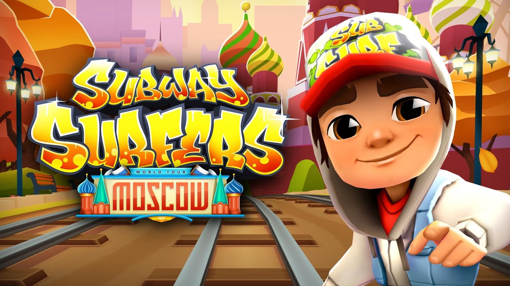
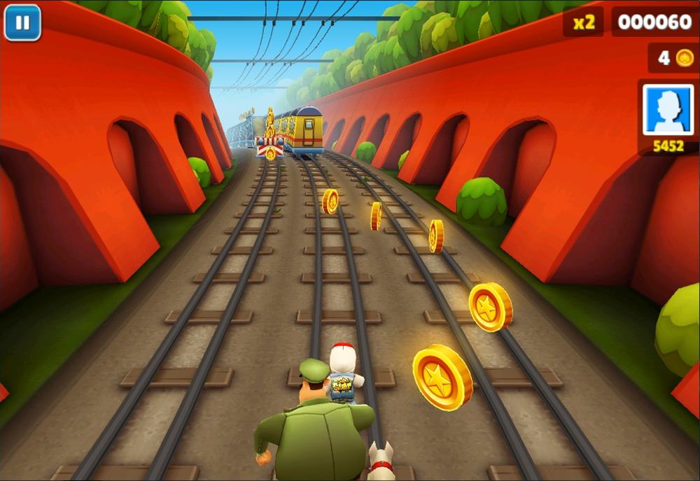

Subway Serfers

Все о Subway Serfers
История Subway Serfers
- Игра subway surfers до недавних времен была очень популярна. Определенное число поклонников остается у нее и сейчас. Это игра на ловкость, реакцию и выдержку. Игроки оставляют в своем большинстве только положительные комментарии — настолько им нравится сюжет игры.
- Бонусов в игре очень много, и из-за этого она очень привлекает пользователей. Загадочная большая коробка, магнит, притягивающий монеты, суперкроссовки, позволяющие высоко подпрыгивать, реактивный портфель, летающая доска и много-много множителей — все это в одной игре.
Отдельного внимания заслуживает и работа художников-дизайнеров — они приложили максимум усилий, чтобы игра одновременно и притягивала, и не утомляла глаза. Подобраны были неяркие, но красочные и насыщенные цвета, благодаря которым процесс игры стал еще красочнее.
- История создания этой игрушки интересна. Эта игра не первая в своем роде, чем-то она похожа на уже давно известную Temple Run. Датские компании Kiloo и SYBO Games разработал проект одной из самых популярных игрушек в мире. В subway surfers подростки, рисующие граффити на стенах, убегают от полисмена с собакой. Им нужно преодолевать препятствия, остерегаться поездов и разбросанных предметов, которые могут попадаться на их пути. Чтобы остаться в живых и не попасться в руки полиции, персонажи высоко прыгают и даже летают.
Фишки и секреты игры
- Старайтесь держаться верхотуры, поскольку свысока прекрасны видны спереди лежащие бонусы и препятствия.
Если вы идете на рекорд и уже набрали приличную скорость, то старайтесь избегать участков с монетками, по которым движутся поезда.
Находясь в воздухе, делайте подкат, чтобы резко приземлиться.
Из бонусов на первых порах игры рекомендуется использовать магнит и реактивный ранец.
Не пренебрегайте суперкроссовками, они не раз помогут выбраться из безвыходной ситуации. Тем не менее определенной сноровки они все же потребуют.
Если вы решитесь пойти на рекорды, то не тратьте первые бесплатные ключи.
Купив Mystery Box, жмите по надписи «tap to open» не одним пальцем, а несколькими. Порой проскакивает большее количество вещей или золотых монет.
В игре можно попытаться получить персонажа «Ниндзя», проделав следующий трюк: в меню выбора персонажа нажмите один раз на ниндзю, а затем несколько раз слева и справа от него.
Во время прохождения нажмите десять раз вверх, пять влево, пять вправо, десять вниз, а затем сделайте прыжок и кувырок. После этого запас монет будет пополнятся до тех пор, пока вы не столкнетесь с препятствием.

Сейчас вы видите геймплей этой игры,да он возможно покажется простеньким,но за это практический она и полюбилась многим